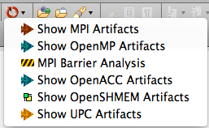
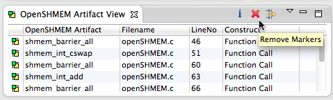
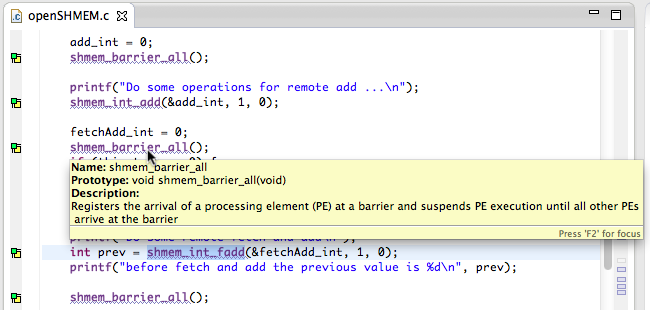
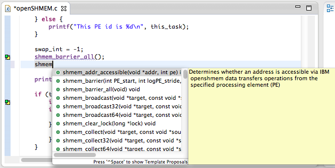
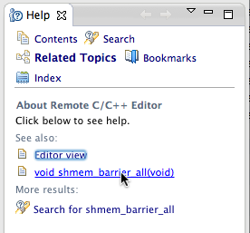
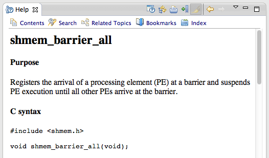

Select the "Show OpenSHMEM Artifacts" menu item in the PLDT icon menu in the tool bar.

(Note: if it complains that a source file is not selected the first time, select it again and retry.)
The workbench with the selection and menu item is shown below:


In the editor, hover over an OpenSHMEM api and a popup box shows details of that API.

Type an incomplete OpenSHMEM function name e.g. "shmem_" and hit Ctrl-Space. The information that is shown is populated with CDT completions including argument types, but in addition, the PTP-OpenSHMEM tools also provide specific information about actual OpenSHMEM functions where appropriate, and a yellow popup with additional textual descriptive information about the function. Pick the one you want with the arrow keys or the mouse, to add the API to your source file.

Also, if F1 is pressed when the cursor is within a function name, a help view appears which shows additional information. (In Linux press Ctrl-F1; in Mac Use Help button or use menu Help > Dynamic Help)

Click on the link to navigate to the doc file for that API.
